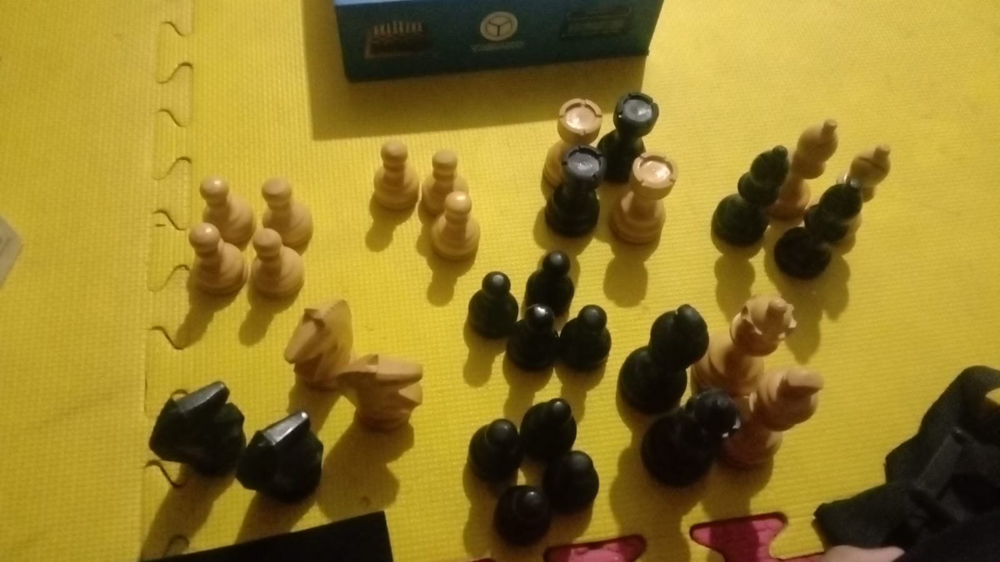
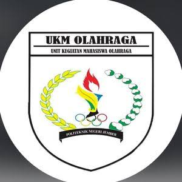
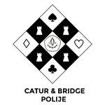
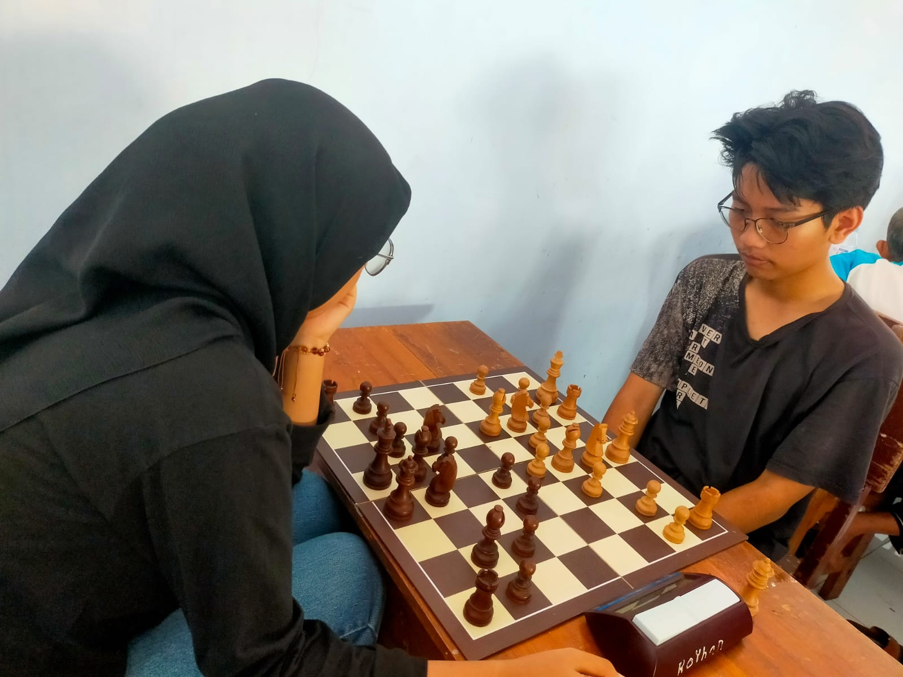
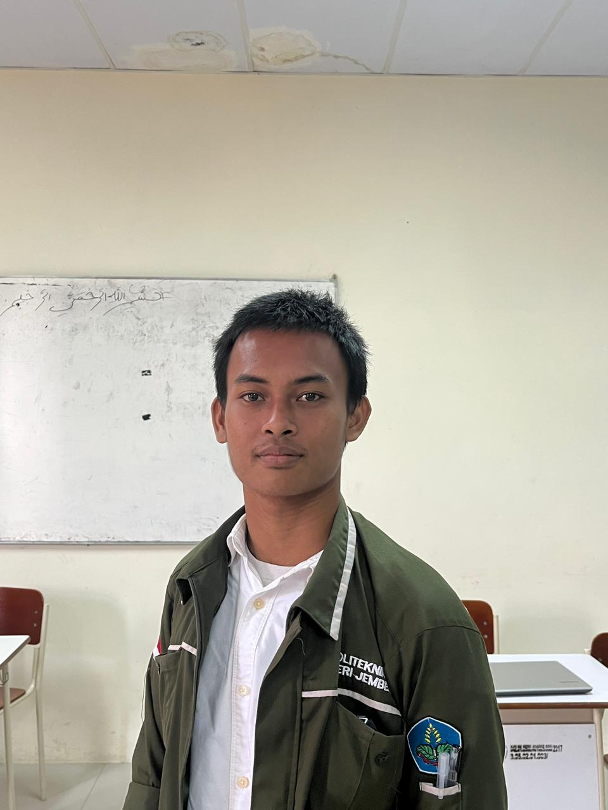
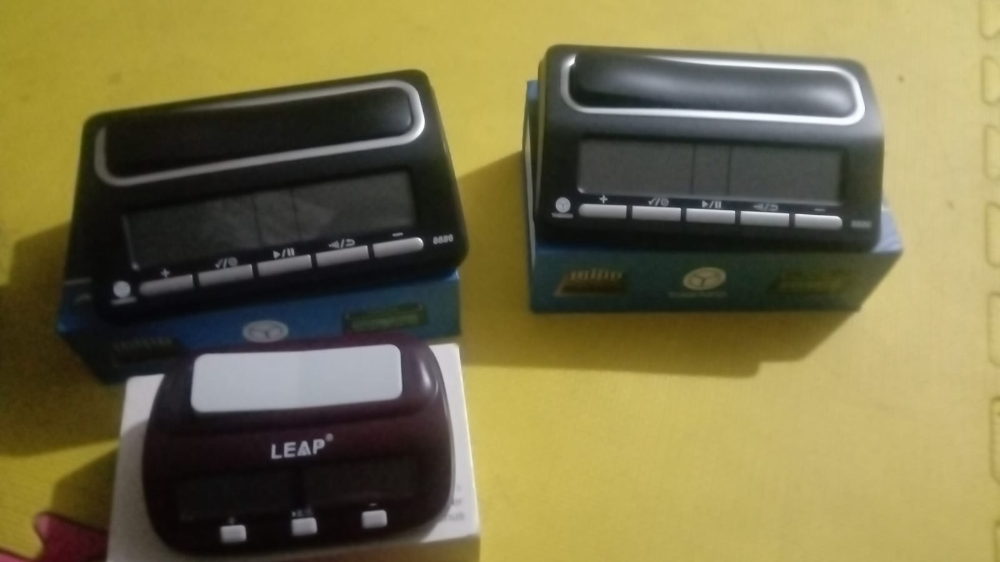
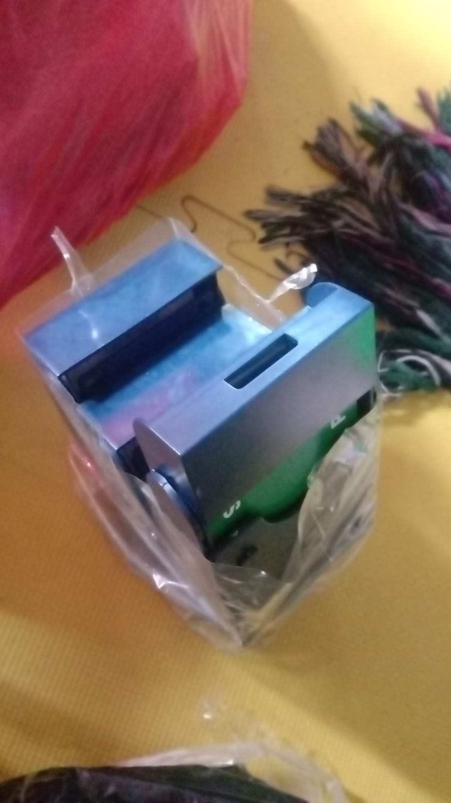

♟
• Buah Catur
Bidak catur untuk latihan rutin, sparring, dan turnamen internal. Anggota bisa bermain kapan saja selama jadwal latihan.


UKM - OLAHRAGADivisi Catur & Bridge adalah wadah bagi mahasiswa untuk mengembangkan potensi, menjalin persahabatan, dan meraih prestasi di bidang catur dan bridge.
UKM-O Catur & Bridge adalah unit kegiatan mahasiswa yang berfokus pada pengembangan minat dan bakat di bidang catur dan bridge. Kami menjadi wadah bagi mahasiswa untuk belajar, berlatih, dan berkompetisi serta menjalin silaturahim antar anggota.
Lihat Selengkapnya →
Menjadi UKM yang unggul dalam prestasi, berkarakter, dan berdaya saing di bidang catur dan bridge.
Kenali para pengurus UKM-O Catur & Bridge yang berkomitmen untuk kemajuan bersama.

Devis Sapta Pratama
Meningkatkan teknik dan strategi permainan catur.
Melatih kerja sama dan komunikasi dalam permainan bridge.
Meningkatkan teknik dan strategi permainan catur.
Melatih kerja sama dan komunikasi dalam permainan bridge.
Dokumentasi berbagai kegiatan dan momen berharga UKM-O Catur & Bridge

Bidak catur untuk latihan rutin, sparring, dan turnamen internal. Anggota bisa bermain kapan saja selama jadwal latihan.

Jam catur digital untuk melatih manajemen waktu sesuai aturan pertandingan resmi. Cocok untuk latihan catur kilat dan standar.

Satu set bidding box untuk latihan bridge, lengkap dengan perlengkapan bermain berempat. Dipakai untuk melatih strategi dan kerja sama tim.
Bergabunglah bersama kami dan rasakan manfaatnya lebih dari sekedar permainan.
Melatih kemampuan berpikir dan mengambil keputusan.
Mendapat kesempatan mengikuti berbagai perlombaan.
Bertemu mahasiswa yang memiliki minat yang sama.